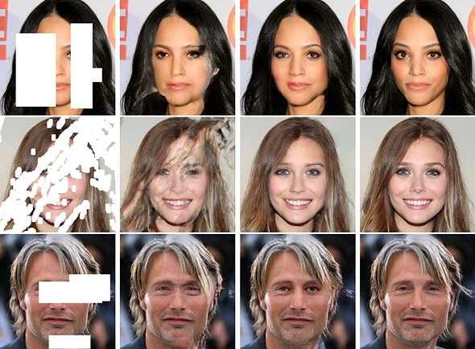

Introduction
Data-Based Economics
General
- Your instructors:
- Pablo Winant:
pwinant@escp.eu(course and tutorials) - Rayane Hanifi:
rayane.hanifi@edu.escp.eu(tutorials)
- Pablo Winant:
- Hint: start your mail subject by
[dbe] - All course material on Nuvolos
- a datascience platform
- you’ll be able to keep a full backup afterwards
- Collaboration between students is strongly encouraged
So what will we do ?

- Programming
- Econometrics / Machine Learning
- Talk about economics
Data-based economics (1)
- Most economists use data all the time
- to illustrate facts
- to test theories
Data-based economics
In practice these are the tasks an economist needs to perform:
- import data
-
clean the data
- deal with heterogenous sources, missing data, abnormal observerations
- super time consuming
- we’ll make this part easy for you
- describe the data (statistics), visualize it
- interpret it using a model
- present results
Econometrics
Econometricks
An art invented by economists: \[\underbrace{y}\_{\text{dependent variable}} = a \underbrace{x}\_{\text{explanatory variable}} + b\]
-
Main challenge:
- given dataset \((x_i, y_i)\)
- find \(a\) while controlling for \(b\)
- understand robustness of results
- predict new values of \(y\) for new values of \(x\)
-
Example 1:
- How happy are you?
- What is \(x\) ? What is \(y\) ?
Econometricks (2)
\[\underbrace{y}\_{\text{dependent variable}} = a \underbrace{x}\_{\text{explanatory variable}} + b\]
-
Example 2:
- young men who go to war receive in average lower wages when they return than men who didn’t go to war
- … is it because they skipped college?
- … or did they choose to go to war because they were less skilled for college?
- find a way to extract causality
- -> instrumental variables
- This was worth a Nobel Prize! (D. Card, J. Angrist, G.W. Imbens)
Econometricks (3)
\[\underbrace{y}\_{\text{dependent variable}} = a \underbrace{x}\_{\text{explanatory variable}} + b\]
-
Example 3:
- I want to establish a link between growth and trade openness
- but my country has only 10 years of historical data… (within dimension)
- … let’s take 50 countries at the same time (between dimension)
- find a way to analyze both dimensions at the same time
- -> panel data
Big Data Era and Machine Learning
- Data has become very abundant
-
Large amounts of data of all kinds
- structured (tables, …)
- unstructured (text, images, …)
-
Machine learning:
- a set of powerful algorithms…
- … so powerful some call it artificial intelligence
- they learn by processing data
- … to extract information and relations in large data sets
- …
-
Comparison with econometrics
- ML has it own, partially redundant, jargon
- much harder to understand causality, standard deviation (i.e. precision)
Machine Learning
\[\underbrace{y}\_{\text{predicted variable}} = f( \underbrace{x}\_{\text{feature}} , a)\]
- Challenge:
- given dataset \((x_i, y_i)\)
- find \(a\), that is find a nonlinear relationship between \(a\) and \(b\)
- predict new values of \(y\) given new values of \(x\)
- What are the difference with econometrics?
Big Data Era and Machine Learning (1)

Sentiment analysis: predict population’s optimism by analyzing tweets.
Check sentiment viz
Big Data Era and Machine Learning (2)

Deep learning: artificial neural nets
Programming
Why program in Python?
- Why learn and use Python?
- And not
- R
- SPSS
- Stata
- Matlab
- C
- Javascript
- SQL
- …
Because
Python is:
<img src="python_kids.jpg" width=800><br>Easy<img src="download_python.png" width=1200><br>Free
Popular (TIOBE Index) - lively community - lots of online ressources - libraries for virtually anything


- The lingua Franca of Machine learning
- All major machine learning softwares are written or interface with Python

Why Should you learn programming ?
- Researchers (econometricians or data scientists) spend 80% of their time writing code.
-
Presentation (plots, interactive apps) is key and relies on
- … programming
- Interaction with code becomes unavoidable in business environment
- fixing the website
- querying the database
- …
-
Worth investing a bit of time to learn it
- you can easily become an expert
- Plus it’s fun
Programming
How good should you program ?
<div class="fragment current-visible" data-fragment-index=1> <img src="anxious.jpg"> </div>
<div class="fragment current-visible" data-fragment-index=2> <img src="furious.webp"> </div>
<div class="fragment current-visible" data-fragment-index=3> <img src="relieved.jpg"> </div>
<div class="fragment current-visible" data-fragment-index=4> <img src="googleit.avif"> </div>
<div class="fragment current-visible" data-fragment-index=5> <img src="happy.jpeg" width=600> </div>- We will “assume” everybody as some prior experience with Python
- Even though some of you have possibly never touched it
- We’ll do some catchup today
- And count on you to find the resources to learn what you need when you need it
- Of course you can always ask questions
Additional resources
Plenty of online resources to learn python/econometrics/machine learning
- learnpython sponsored by datacamp
- quantecon: designed for economists, good examples of projects
- Python Data Science Handbook: by Jake Van der Plas, very complete. Online free version.
- Introduction to Econometrics with R, in R but very clear (beginner and advanced versions)
Quantecon

<div class="col" >
<img src="tom_sargent.jpg" ><br>
Tom Sargent
</div>
<div class="col">
<img src="john_stachurski.jpg" width=50%><br>
John Stachurski
</div>Tom Sargent @ ESCP <br>
<img src="t3m_escp.jpg">- Quantecon: free online lectures to learn python programming and (advanced) economics
- now with a section on datascience
- it is excellent!
- we will use some of it today